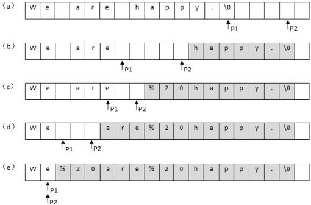
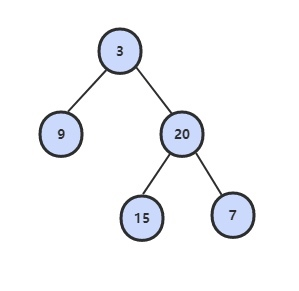

剑指Offer - ⾯试需要的基础知识¶
2. 实现 Singleton¶
3. 数组中重复的数字¶
在一个长度为n的数组里的所有数字都在0到n-1的范围内。数组中某些数字是重复的，但不知道有几个数字是重复的，也不知道每个数字重复几次。请找出数组中任意一个重复的数字。例如，如果输入长度为7的数组[2,3,1,0,2,5,3]，那么对应的输出是第一个重复的数字2。
解决这个问题的一个简单的方法是先把输入的数组排序。然后从头到尾扫描数组，找出重复的数字。或者利用哈希表，每扫到一个数字的时候，都可以用O(1)的时间来判断哈希表里是否已经包含了该数字。如果哈希表里还没有这个数字，就把它加入哈希表，否则，就找到一个重复的数字。
有没有更好的方法呢？要求时间复杂度O(N)，空间复杂度O(1)。因此不能使用排序的方法，也不能使用额外的标记数组。
注意到数组中的数字都在0\sim n-1的范围内。如果这个数组中没有重复的数字，那么当数组排序之后数字i将出现在下标为i的位置。所以可以将值为i的元素调整到第i个位置上。
以 (2, 3, 1, 0, 2, 5) 为例：
position-0 : (2,3,1,0,2,5) // 2 <-> 1
(1,3,2,0,2,5) // 1 <-> 3
(3,1,2,0,2,5) // 3 <-> 0
(0,1,2,3,2,5) // already in position
position-1 : (0,1,2,3,2,5) // already in position
position-2 : (0,1,2,3,2,5) // already in position
position-3 : (0,1,2,3,2,5) // already in position
position-4 : (0,1,2,3,2,5) // nums[i] == nums[nums[i]], exit
遍历到位置4时，该位置上的数为2，但是第2个位置上已经有一个2的值了，因此可以知道2重复。
public boolean duplicate(int[] nums, int length, int[] duplication) { if (nums == null || length <= 0) return false; for (int i = 0; i < length; i++) { while (nums[i] != i) { if (nums[i] == nums[nums[i]]) { duplication[0] = nums[i]; return true; } swap(nums, i, nums[i]); } } return false; } private void swap(int[] nums, int i, int j) { int t = nums[i]; nums[i] = nums[j]; nums[j] = t; }
3. 二维数组中的查找¶
在一个二维数组中，每一行都按照从左到右递增的顺序排序，每一列都按照从上到下递增的顺序排序。请完成一个函数，输入这样的一个二维数组和一个整数，判断数组中是否含有该整数。
Consider the following matrix: [ [1, 4, 7, 11, 15], [2, 5, 8, 12, 19], [3, 6, 9, 16, 22], [10, 13, 14, 17, 24], [18, 21, 23, 26, 30] ] Given target = 5, return true. Given target = 20, return false.
首先选取数组中右上角的数字。
- 如果该数字等于要查找的数字，查找过程结束：
- 如果该数字大于要查找的数字，剔除这个数字所在的列; 如果该数字小于要查找的数字，剔除这个数字所在的行。也就是说如果要查找的数字不在数组的右上角，则每－次都在数组的查找范围中剔除）行或者一列，这样每一步都可以缩小.
- 查找的范围，直到找到要查找的数字，或者查找范围为空。
时间复杂度：O(M + N) + O(1)
当前元素的查找区间为左下角的所有元素，例如元素12的查找区间如下：

public boolean Find(int target, int [][] array) { if (array == null || array.length == 0 || array[0].length == 0) return false; int row = 0, col = array[0].length - 1; while (row < array.length && col >= 0) { int cmp = array[row][col] - target; if (cmp > 0) col--; else if (cmp < 0) row++; else return true; } return false; }
4. 替换空格¶
请实现一个函数，将一个字符串中的每个空格替换成“%20”。例如，当字符串为"We Are Happy". 则经过替换之后的字符串"为We%20Are%20Happy"。
Note
在⽹络编程中，如果URL参数中含有特殊字符，如空格、'#'等，可能导致服务器端⽆法获得正确的参数值。我们需要将这些特殊符号转换成服务器可以识别的字符。转换的规则是在'%'后⾯跟上ASCII码的两位⼗六进制的表⽰。⽐如空格的ASCII码是32，即⼗六进制的0x20，因此空格被替换成"%20"。再⽐如'#'的ASCII码为35，即⼗六进制的0x23，它在URL中被替换为"%23"。
最直观的做法是从头到尾扫描字符串，每次碰到空格字符的时候进行替换。由于是把1个字符替换成3个字符，我们必须要把空格后面的字符都后移2个字节，否则就有两个字符被覆盖了。
从前往后把字符串"We are happy."中的空格替换成"%20"的过程。灰色背景表示需要移动的字符。

public String replaceSpace(StringBuffer str) { if (str == null || str.length() == 0) return ""; for (int i = 0; i < str.length(); i++) if (str.charAt(i) == ' ') { str.setCharAt(i, '%'); str.insert(i + 1, "20"); i += 2; } return str.toString(); }
假设字符串的长度是n。对每个空格字符，需要移动后面O(n)个字符，因此对于含有n个字符的字符串而言，最坏时间复杂度是O(n^2)。
能不能减少移动次数呢？答案是肯定的，把从前向后替换改成从后向前替换。可以先遍历一次字符串，统计出字符串中空格的综述，计算出替换之后的字符串长度 = n + 2 \times 空格数。
在字符串尾部填充任意字符，使得字符串的长度等于替换之后的长度。因为一个空格要替换成三个字符（%20），因此当遍历到一个空格时，需要在尾部填充两个任意字符。准备两个指针，P1和P2，P1指向原始字符串的末尾，而P2指向替换之后的字符串的末尾.接下来我们向前移动指针P1，逐个把它指向的字符复制到P2指向的位置，直到碰到空格为止，此时把P1向前移动1格，并在P2之前插入字符串"%20",然后向前移动3格。重复此过程，直到P1和P2指向同一位置，表明所有空格都已经替换完毕。

由于所有的字符都指复制/移动一次，因此时间复杂度是O(n)。
public String replaceSpace(StringBuffer str) { if (str == null || str.length() == 0) return ""; // 获取空格的数量 int n = str.length(); int numOfSpace = 0; for (int i = 0; i < n; i++) if (str.charAt(i) == ' ') numOfSpace++; // 插入空格 int newStringLength = n + 2 * numOfSpace; // 新字符串长度 str.setLength(newStringLength); // 扩充字符串 int p1 = n - 1, p2 = str.length() - 1; // p1指向旧字符串，p2指向新字符串 while (p1 != p2) { if (str.charAt(p1) != ' ') str.setCharAt(p2--, str.charAt(p1)); else { str.setCharAt(p2--, '0'); str.setCharAt(p2--, '2'); str.setCharAt(p2--, '%'); } p1--; } return str.toString(); }
5. 从尾到头打印链表¶
输入链表的第一个节点，从尾到头反过来打印出每个结点的值。链表结点定义如下：
public class ListNode { int val; ListNode next = null; ListNode(int val) { this.val = val; } }
我们想到解决这个问题肯定要遍历链表。遍历的顺序是从头到尾的顺序，可输出的顺序却是从尾到头。也就是说第⼀个遍历到的结点最后⼀个输出，⽽最后⼀个遍历到的结点第⼀个输出。这就是典型的“后进先出”，我们可以⽤栈实现这种顺序。每经过⼀个结点的时候，把该结点放到⼀个栈中。当遍历完整个链表后，再从栈顶开始逐个输出结点的值，此时输出的结点的顺序已经反转过来了。
public ArrayList<Integer> printListFromTailToHead(ListNode listNode) { if (listNode == null) return new ArrayList Stack<Integer> stack = new Stack<>(); while (listNode != null) { stack.add(listNode.val); listNode = listNode.next; } // 不能直接返回: return new ArrayList<>(stack); ArrayList<Integer> ret = new ArrayList<>(); while (!stack.isEmpty()) res.add(stack.pop()); return res; }
既然想到了⽤栈来实现这个函数，⽽递归在本质上就是⼀个栈结构， 于是很⾃然地又想到了⽤递归来实现。要实现反过来输出链表，我们每访问到⼀个结点的时候，先递归输出它后⾯的结点，再输出该结点⾃⾝，这样链表的输出结果就反过来了。
public ArrayList<Integer> printListFromTailToHead(ListNode listNode) { ArrayList<Integer> list = new ArrayList<>(); printListFromTailToHead(list, listNode); return list; } private void printListFromTailToHead(ArrayList<Integer> list, ListNode listNode) { if (listNode == null) return; printListFromTailToHead(list, listNode.next); list.add(listNode.val); }
也可以使用ArrayList.addAll()，从而省去辅助函数，当然效率比较低：
public ArrayList<Integer> printListFromTailToHead(ListNode listNode) { ArrayList<Integer> list = new ArrayList<>(); if (listNode == null) return list; list.addAll(printListFromTailToHead(listNode.next)); list.add(listNode.val); return list; }
虽然上⾯的基于递归的代码看起来很简洁，但有个问题：当链表⾮常长的时候，就会导致函数调⽤的层级很深，从⽽有可能导致函数调⽤栈溢出。显式⽤栈基于循环实现的代码的鲁棒性要好⼀些。
顺序遍历链表，获取链表节点的值，然后反转。
public ArrayList<Integer> printListFromTailToHead(ListNode listNode) { ArrayList<Integer> res = new ArrayList<>(); while (listNode != null) { res.add(listNode.val); listNode = listNode.next; } Collections.reverse(res); return res; }
6. 重建二叉树¶
根据二叉树的前序遍历和中序遍历的结果，重建出该二叉树。假设输入的前序遍历和中序遍历的结果中都不含重复的数字。
preorder = [3,9,20,15,7] inorder = [9,3,15,20,7]

8. 二叉树的下一个结点¶
给定一个二叉树和其中的一个结点，请找出中序遍历顺序的下一个结点并且返回。注意，树中的结点不仅包含左右子结点，同时包含指向父结点的指针。
public class TreeLinkNode { int val; TreeLinkNode left = null; TreeLinkNode right = null; TreeLinkNode next = null; TreeLinkNode(int val) { this.val = val; } }
① 如果一个节点的右子树不为空，那么该节点的下一个节点是右子树的最左节点；

② 否则，向上找第一个左链接指向的树包含该节点的祖先节点。

public TreeLinkNode GetNext(TreeLinkNode root){ if (root == null) return null; // 右子树的最左节点 if (root.right != null) { root = root.right; while (root.left != null) root = root.left; return root; } // 第一个左链接指向的树包含左子树 TreeLinkNode parent = root.next; while(parent != null && root != parent.left) { root = parent; parent = root.next; } return parent; }
7. 用两个栈实现队列¶
用两个栈来实现一个队列，完成队列的Push和Pop操作。
in栈用来处理入栈(push)操作，out栈用来处理出栈(pop)操作。一个元素进入in栈之后，出栈的顺序被反转。当元素要出栈时，需要先进入out栈，此时元素出栈顺序再一次被反转，因此出栈顺序就和最开始入栈顺序是相同的，先进入的元素先退出，这就是队列的顺序。
当out栈中不为空时，在out栈中的栈顶元素是最先进⼊队列的元素，可以弹出。当out栈为空时，我们把in栈中的元素逐个弹出并压⼊out栈。由于先进⼊队列的元素被压到in栈的底端，经过弹出和压⼊之后就处于out栈的顶端了，又可以直接弹出。
例如，1,2,3,4的入栈和出栈：

public class Queue { Stack<Integer> in = new Stack<Integer>(); Stack<Integer> out = new Stack<Integer>(); public void push(int node) { in.push(node); } public int pop() throws Exception { if (out.isEmpty()) while (!in.isEmpty()) out.push(in.pop()); if (out.isEmpty()) throw new Exception("Queue is Empty!"); return out.pop(); } }
8. 旋转数组的最小数字¶
把一个数组最开始的若干个元素搬到数组的末尾，我们称之为数组的旋转。 输入一个非减排序的数组的一个旋转，输出旋转数组的最小元素。 例如数组{3,4,5,1,2}为{1,2,3,4,5}的一个旋转，该数组的最小值为1。 NOTE：给出的所有元素都大于0，若数组大小为0，请返回0。
如果数组元素允许重复的话，那么就会出现一个特殊的情况：nums[lo] = nums[mid] = nums[hi]，那么此时无法确定解在哪个区间，需要切换到顺序查找。例如对于数组 {1,1,1,0,1}，lo、mid和hi指向的数都为1，此时无法知道最小数字0在哪个区间。
public int minNumberInRotateArray(int [] nums) { if (nums == null || nums.length == 0) return 0; int lo = 0, hi = nums.length - 1, mid; while (lo < hi) { // 取中间的位置 mid = lo + (hi - lo) / 2; // 如果三个数都相等，则需要进行顺序处理，从头到尾找最小的值 if (nums[mid] == nums[hi] && nums[mid] == nums[lo]) return findMin(nums, lo , hi); // 如果中间位置对应的值在后一个排好序的部分，将hi设置为新的处理位置 else if (nums[mid] > nums[hi]) lo = mid + 1; else hi = mid; // 不是 hi = mid - 1; } return nums[lo]; } // 找数组中的最小值 private int findMin(int[] nums, int lo, int hi) { int min = nums[lo]; for (int i = lo + 1; i <= hi; i++) if (nums[i] < min) min = nums[i]; return min; }
9 斐波那契数列¶
斐波那契数列¶
求斐波那契数列的第n项，n <= 39。
由于斐波那契数列可以用递归函数表示，最直接的方法是用递归来解决。
public int Fibonacci(int n) { if (n <= 0) return 0; if (n == 1) return 1; return Fibonacci(n - 1) + Fibonacci(n - 2); }
但是如果使用递归求解，会重复计算一些子问题。例如，计算f(10)需要计算 f(9)和f(8)，计算f(9)需要计算f(8)和f(7)，可以看到f(8)被重复计算了。事实上，⽤递归⽅法计算的时间复杂度是以n的指数的⽅式递增的。
使用动态规划的思想把子问题的解缓存起来，从而避免重复求解子问题。
public int Fibonacci(int n) { if (n <= 1) return n; int[] fib = new int[n + 1]; fib[1] = 1; for (int i = 2; i <= n; i++) fib[i] = fib[i - 1] + fib[i - 2]; return fib[n]; }
考虑到第i项只与第i-1和第i-2项有关，因此只需要存储前两项的值就能求解第i项，从而将空间复杂度由O(N)降低为O(1)。
public int Fibonacci(int n) { if (n < 0) throw new IllegalArgumentException("n must be a non-negative integer"); if (n < 2) return n == 0 ? 0 : 1; int prev = 1, before_prev = 0, cur = 0; for (int i = 2; i <= n; i++) { cur = prev + before_prev; before_prev = prev; prev = cur; } return cur; }
由于待求解的n小于40，因此也可以将前40项的结果先进行计算，之后就能以 O(1)时间复杂度得到第n项的值了。
public class Solution { private int[] fib = new int[40]; public Solution() { fib[1] = 1; fib[2] = 2; for (int i = 2; i < fib.length; i++) fib[i] = fib[i - 1] + fib[i - 2]; } public int Fibonacci(int n) { return fib[n]; } }
跳台阶¶
一只青蛙一次可以跳上 1 级台阶，也可以跳上 2 级。求该青蛙跳上一个 n 级的台阶总共有多少种跳法。
题目类似于LeetCode 70 climbing stairs。
public int JumpFloor(int n) { if (n <= 2) return n; int last = 1, secondLast = 2; int result = 1; for (int i = 2; i < n; i++) { result = secondLast + last; secondLast = last; last = result; } return result; }
矩形覆盖¶
我们可以用2\times 1的小矩形横着或者竖着去覆盖更大的矩形。请问用n个2\times 1的小矩形无重叠地覆盖一个2\times n的大矩形，总共有多少种方法？

我们先把2×8的覆盖⽅法记为f(8。⽤第⼀个1×2⼩矩形去覆盖⼤矩形的最左边时有两个选择，竖着放或者横着放。当竖着放的时候，右边还剩下2×7的区域，这种情形下的覆盖⽅法记为f(7)。接下来考虑横着放的情况。当1×2的⼩矩形横着放在左上⾓的时候，左下⾓必须和横着放⼀个1×2的⼩矩形，⽽在右边还还剩下2×6的区域，这种情形下的覆盖⽅法记为 f(6)，因此f(8)=f(7)＋f(6)。此时我们可以看出，这仍然是斐波那契数列。
变态跳台阶¶
一只青蛙一次可以跳上1级台阶，也可以跳上2级... 它也可以跳上n级。求该青蛙跳上一个n级的台阶总共有多少种跳法。
n个台阶总共有2^{n-1}种跳法。分析如下:
- f(1) = 1
- f(2) = f(2-1) + f(2-2)
- f(3) = f(3-1) + f(3-2) + f(3-3)
- ...
- f(n) = f(n-1) + f(n-2) + f(n-3) + ... + f(n-(n-1)) + f(n-n)
public int JumpFloorII(int target) { if (target <= 0) return 0; int[] dp = new int[target + 1]; dp[0] = 0; for (int i = 1; i <= target; i++) { for (int j = 0; j < i; j++) dp[i] += dp[j]; dp[i] += 1; } return dp[target]; }
10. 二进制中1的个数¶
输入一个整数，输出该数二进制表示中1的个数。其中负数用补码表示。